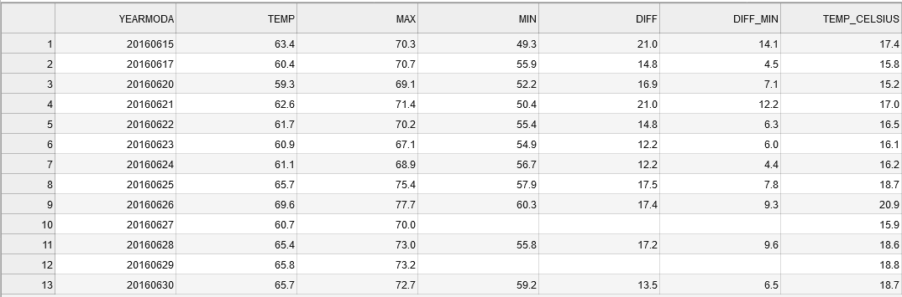

Processing data with Pandas¶
During the first part of this lesson you learned the basics of pandas data structures (Series and DataFrame) and got familiar with basic methods loading and exploring data. Here, we will continue with basic data manipulation and analysis methods such calculations and selections.
We are now working in a new notebook-file and we need to import pandas again.
[1]:
import pandas as pd
Let’s work with the same input data 'Kumpula-June-2016-w-metadata.txt' and load it using the pd.read_csv() method. Remember, that the first 8 lines contain metadata so we can skip those:
[2]:
fp = 'Kumpula-June-2016-w-metadata.txt'
data = pd.read_csv(fp, sep=',', skiprows=8)
Here, we also added the sep parameter to indicate that we are dealing with a comma-delimited text file. Comma is also the default value for the sep-parameter. Depending on your operating system and the input data, you might need to specify other separators such as ;.
Remember to always check the data after reading it in:
[3]:
data.head()
[3]:
| YEARMODA | TEMP | MAX | MIN | |
|---|---|---|---|---|
| 0 | 20160601 | 65.5 | 73.6 | 54.7 |
| 1 | 20160602 | 65.8 | 80.8 | 55.0 |
| 2 | 20160603 | 68.4 | NaN | 55.6 |
| 3 | 20160604 | 57.5 | 70.9 | 47.3 |
| 4 | 20160605 | 51.4 | 58.3 | 43.2 |
Basic calculations¶
One of the most common things to do in pandas is to create new columns based on calculations between different variables (columns).
We can create a new column into our DataFrame by specifying the name of the column and giving it some default value (in this case decimal number 0.0).
[4]:
# Define a new column "DIFF"
data['DIFF'] = 0.0
# Print the dataframe
print(data)
YEARMODA TEMP MAX MIN DIFF
0 20160601 65.5 73.6 54.7 0.0
1 20160602 65.8 80.8 55.0 0.0
2 20160603 68.4 NaN 55.6 0.0
3 20160604 57.5 70.9 47.3 0.0
4 20160605 51.4 58.3 43.2 0.0
5 20160606 52.2 59.7 42.8 0.0
6 20160607 56.9 65.1 45.9 0.0
7 20160608 54.2 NaN 47.5 0.0
8 20160609 49.4 54.1 45.7 0.0
9 20160610 49.5 55.9 43.0 0.0
10 20160611 54.0 62.1 41.7 0.0
11 20160612 55.4 64.2 46.0 0.0
12 20160613 58.3 68.2 47.3 0.0
13 20160614 59.7 67.8 47.8 0.0
14 20160615 63.4 70.3 49.3 0.0
15 20160616 57.8 67.5 55.6 0.0
16 20160617 60.4 70.7 55.9 0.0
17 20160618 57.3 NaN 54.0 0.0
18 20160619 56.3 59.2 54.1 0.0
19 20160620 59.3 69.1 52.2 0.0
20 20160621 62.6 71.4 50.4 0.0
21 20160622 61.7 70.2 55.4 0.0
22 20160623 60.9 67.1 54.9 0.0
23 20160624 61.1 68.9 56.7 0.0
24 20160625 65.7 75.4 57.9 0.0
25 20160626 69.6 77.7 60.3 0.0
26 20160627 60.7 70.0 NaN 0.0
27 20160628 65.4 73.0 55.8 0.0
28 20160629 65.8 73.2 NaN 0.0
29 20160630 65.7 72.7 59.2 0.0
Let’s check the datatype of our new column
[5]:
# Check datatypes
data['DIFF'].dtypes
[5]:
dtype('float64')
Okey, so we see that Pandas created a new column and recognized automatically that the data type is float as we passed a 0.0 value to it.
Let’s update the column DIFF by calculating the difference between MAX and MIN columns to get an idea how much the temperatures have been varying during different days:
[6]:
#Calculate max min difference
data['DIFF'] = data['MAX'] - data['MIN']
# Check the result
print(data.head())
YEARMODA TEMP MAX MIN DIFF
0 20160601 65.5 73.6 54.7 18.9
1 20160602 65.8 80.8 55.0 25.8
2 20160603 68.4 NaN 55.6 NaN
3 20160604 57.5 70.9 47.3 23.6
4 20160605 51.4 58.3 43.2 15.1
The calculations were stored into the DIFF column as planned.
You can also create new columns on-the-fly at the same time when doing the calculation. Let’s test this by calculating the difference between minimum temperature (MIN) and the mean temperature of the day (TEMP) into a new column DIFF_MIN:
[7]:
# Calculate difference between temp and min column values
data['DIFF_MIN'] = data['TEMP'] - data['MIN']
# Print the dataframe
print(data)
YEARMODA TEMP MAX MIN DIFF DIFF_MIN
0 20160601 65.5 73.6 54.7 18.9 10.8
1 20160602 65.8 80.8 55.0 25.8 10.8
2 20160603 68.4 NaN 55.6 NaN 12.8
3 20160604 57.5 70.9 47.3 23.6 10.2
4 20160605 51.4 58.3 43.2 15.1 8.2
5 20160606 52.2 59.7 42.8 16.9 9.4
6 20160607 56.9 65.1 45.9 19.2 11.0
7 20160608 54.2 NaN 47.5 NaN 6.7
8 20160609 49.4 54.1 45.7 8.4 3.7
9 20160610 49.5 55.9 43.0 12.9 6.5
10 20160611 54.0 62.1 41.7 20.4 12.3
11 20160612 55.4 64.2 46.0 18.2 9.4
12 20160613 58.3 68.2 47.3 20.9 11.0
13 20160614 59.7 67.8 47.8 20.0 11.9
14 20160615 63.4 70.3 49.3 21.0 14.1
15 20160616 57.8 67.5 55.6 11.9 2.2
16 20160617 60.4 70.7 55.9 14.8 4.5
17 20160618 57.3 NaN 54.0 NaN 3.3
18 20160619 56.3 59.2 54.1 5.1 2.2
19 20160620 59.3 69.1 52.2 16.9 7.1
20 20160621 62.6 71.4 50.4 21.0 12.2
21 20160622 61.7 70.2 55.4 14.8 6.3
22 20160623 60.9 67.1 54.9 12.2 6.0
23 20160624 61.1 68.9 56.7 12.2 4.4
24 20160625 65.7 75.4 57.9 17.5 7.8
25 20160626 69.6 77.7 60.3 17.4 9.3
26 20160627 60.7 70.0 NaN NaN NaN
27 20160628 65.4 73.0 55.8 17.2 9.6
28 20160629 65.8 73.2 NaN NaN NaN
29 20160630 65.7 72.7 59.2 13.5 6.5
As you can see, now we created directly a new column with the calculation. In a similar manner, you can do calculations using as many columns as you need and using any kind of math algebra (e.g. subtracttion, addition, multiplication, division, exponentiation, etc.).
We can for example convert the Fahrenheit temperatures in TEMP column into Celsius using the formula that we have seen already many times:
[8]:
# Create a new column and convert temp fahrenheit to celsius:
data['TEMP_CELSIUS'] = (data['TEMP'] - 32) / (9/5)
#Check output
print(data.head())
YEARMODA TEMP MAX MIN DIFF DIFF_MIN TEMP_CELSIUS
0 20160601 65.5 73.6 54.7 18.9 10.8 18.611111
1 20160602 65.8 80.8 55.0 25.8 10.8 18.777778
2 20160603 68.4 NaN 55.6 NaN 12.8 20.222222
3 20160604 57.5 70.9 47.3 23.6 10.2 14.166667
4 20160605 51.4 58.3 43.2 15.1 8.2 10.777778
TASK
Calculate Kelvin values based on the Celsius values and store the result a new column TEMP_KELVIN in our dataframe.
0 Kelvins is is -273.15 degreese Celsius as we learned during Lesson 4.
[9]:
# Add column "TEMP_KELVIN"
Selecting rows and columns¶
One quite common procedure in programming that you want to select only specific rows from your data and possibly apply some operations into those rows only.
Selecting several rows:
One common way of selecting only specific rows from your DataFrame is done via index slicing to extract part of the DataFrame. Let’s select the first five rows and assign them to a variable called selection:
[10]:
# Select first five rows of dataframe
selection = data[0:5]
print(selection)
YEARMODA TEMP MAX MIN DIFF DIFF_MIN TEMP_CELSIUS
0 20160601 65.5 73.6 54.7 18.9 10.8 18.611111
1 20160602 65.8 80.8 55.0 25.8 10.8 18.777778
2 20160603 68.4 NaN 55.6 NaN 12.8 20.222222
3 20160604 57.5 70.9 47.3 23.6 10.2 14.166667
4 20160605 51.4 58.3 43.2 15.1 8.2 10.777778
As you can see, slicing can be done in a similar manner as with normal Python lists, i.e. you specify index range you want to select inside the square brackets selection = dataframe[start_index:stop_index].
Selecting several rows and columns:
It is also possible to control which columns are chosen, while selecting a subset of rows. Here, we select only temperature values (TEMP) between on rows index 0-5:
[11]:
# Select temp column values between indices 5 and 10
selection = data.loc[0:5, 'TEMP']
print(selection)
0 65.5
1 65.8
2 68.4
3 57.5
4 51.4
5 52.2
Name: TEMP, dtype: float64
It is also possible to select multiple columns using those same indices. Here, we select TEMP and the TEMP_CELSIUS columns from a set of rows by passing them inside a list (.loc[start_index:stop_index, list_of_columns]):
[12]:
# Select temp and temp_celsius column values between indices 5 and 10
selection = data.loc[0:5, ['TEMP', 'TEMP_CELSIUS']]
print(selection)
TEMP TEMP_CELSIUS
0 65.5 18.611111
1 65.8 18.777778
2 68.4 20.222222
3 57.5 14.166667
4 51.4 10.777778
5 52.2 11.222222
Selecting a single row:
You can also select an individual row from specific position using the .loc[] indexing. Here we select all the data values using index 4 (the 5th row):
[13]:
# Select one row using index
selection = data.loc[4]
print(selection)
YEARMODA 2.016060e+07
TEMP 5.140000e+01
MAX 5.830000e+01
MIN 4.320000e+01
DIFF 1.510000e+01
DIFF_MIN 8.200000e+00
TEMP_CELSIUS 1.077778e+01
Name: 4, dtype: float64
.loc[] indexing returns the values from that position as a pd.Series where the indices are actually the column names of those variables. Hence, you can access the value of an individual column by referring to its index using following format (both should work):
[14]:
#Print one attribute from the selected row
print(selection['TEMP'])
51.4
TASK
Find the mean temperatures (in Celsius) for the last seven days of June. For now, you should do the selection using the row index values.
[15]:
# Mean temperature for the last seven days of June (use loc indexing to select the correct rows):
Selecting a single value based on row and column:
Sometimes it is enought to access a single value in a DataFrame. In this case, we can use DataFrame.at in stead of Data.Frame.loc.
Let’s select the temprerature (column TEMP) on the first fow (index 0) of our DataFrame:
[16]:
data.at[0, "TEMP"]
[16]:
65.5
EXTRA: Selections by integer position
.iloc
.loc and .at are based on the axis labels - the names of columns and rows. .iloc is another indexing operator which is based on integer values.
See pandas documentation for more information about indexing and selecting data
For example, we could select select TEMP and the TEMP_CELSIUS columns from a set of rows based on their index:
[17]:
data.iloc[0:5:,0:2]
[17]:
| YEARMODA | TEMP | |
|---|---|---|
| 0 | 20160601 | 65.5 |
| 1 | 20160602 | 65.8 |
| 2 | 20160603 | 68.4 |
| 3 | 20160604 | 57.5 |
| 4 | 20160605 | 51.4 |
To access the value on the first row and second column (TEMP), the syntax for iloc would be:
[18]:
data.iloc[0,1]
[18]:
65.5
Filtering and updating data¶
One really useful feature in pandas is the ability to easily filter and select rows based on a conditional statement. The following example shows how to select rows when the Celsius temperature has been higher than 15 degrees into variable warm_temps (warm temperatures). Pandas checks if the condition is True or False for each row, and returns those rows where the condition is True:
[19]:
# Select rows with temp celsius higher than 15 degrees
warm_temps = data.loc[data['TEMP_CELSIUS'] > 15]
print(warm_temps)
YEARMODA TEMP MAX MIN DIFF DIFF_MIN TEMP_CELSIUS
0 20160601 65.5 73.6 54.7 18.9 10.8 18.611111
1 20160602 65.8 80.8 55.0 25.8 10.8 18.777778
2 20160603 68.4 NaN 55.6 NaN 12.8 20.222222
13 20160614 59.7 67.8 47.8 20.0 11.9 15.388889
14 20160615 63.4 70.3 49.3 21.0 14.1 17.444444
16 20160617 60.4 70.7 55.9 14.8 4.5 15.777778
19 20160620 59.3 69.1 52.2 16.9 7.1 15.166667
20 20160621 62.6 71.4 50.4 21.0 12.2 17.000000
21 20160622 61.7 70.2 55.4 14.8 6.3 16.500000
22 20160623 60.9 67.1 54.9 12.2 6.0 16.055556
23 20160624 61.1 68.9 56.7 12.2 4.4 16.166667
24 20160625 65.7 75.4 57.9 17.5 7.8 18.722222
25 20160626 69.6 77.7 60.3 17.4 9.3 20.888889
26 20160627 60.7 70.0 NaN NaN NaN 15.944444
27 20160628 65.4 73.0 55.8 17.2 9.6 18.555556
28 20160629 65.8 73.2 NaN NaN NaN 18.777778
29 20160630 65.7 72.7 59.2 13.5 6.5 18.722222
It is also possible to combine multiple criteria at the same time. Here, we select temperatures above 15 degrees that were recorded on the second half of June in 2016 (i.e. YEARMODA >= 20160615). Combining multiple criteria can be done with & operator (AND) or | operator (OR). Notice, that it is often useful to separate the different clauses inside the parentheses ().
[20]:
# Select rows with temp celsius higher than 15 degrees from late June 2016
warm_temps = data.loc[(data['TEMP_CELSIUS'] > 15) & (data['YEARMODA'] >= 20160615)]
print(warm_temps)
YEARMODA TEMP MAX MIN DIFF DIFF_MIN TEMP_CELSIUS
14 20160615 63.4 70.3 49.3 21.0 14.1 17.444444
16 20160617 60.4 70.7 55.9 14.8 4.5 15.777778
19 20160620 59.3 69.1 52.2 16.9 7.1 15.166667
20 20160621 62.6 71.4 50.4 21.0 12.2 17.000000
21 20160622 61.7 70.2 55.4 14.8 6.3 16.500000
22 20160623 60.9 67.1 54.9 12.2 6.0 16.055556
23 20160624 61.1 68.9 56.7 12.2 4.4 16.166667
24 20160625 65.7 75.4 57.9 17.5 7.8 18.722222
25 20160626 69.6 77.7 60.3 17.4 9.3 20.888889
26 20160627 60.7 70.0 NaN NaN NaN 15.944444
27 20160628 65.4 73.0 55.8 17.2 9.6 18.555556
28 20160629 65.8 73.2 NaN NaN NaN 18.777778
29 20160630 65.7 72.7 59.2 13.5 6.5 18.722222
Now we have a subset of our DataFrame with only rows where the TEMP_CELSIUS is above 15 and the dates in YEARMODA column start from 15th of June.
Notice, that the index values (numbers on the left) are still showing the positions from the original DataFrame. It is possible to reset the index using reset_index() function that might be useful in some cases to be able to slice the data in a similar manner as above. By default the reset_index() would make a new column called index to keep track on the previous index which might be useful in some cases but here not, so we can omit that by passing parameter drop=True.
[21]:
# Reset index
warm_temps = warm_temps.reset_index(drop=True)
print(warm_temps)
YEARMODA TEMP MAX MIN DIFF DIFF_MIN TEMP_CELSIUS
0 20160615 63.4 70.3 49.3 21.0 14.1 17.444444
1 20160617 60.4 70.7 55.9 14.8 4.5 15.777778
2 20160620 59.3 69.1 52.2 16.9 7.1 15.166667
3 20160621 62.6 71.4 50.4 21.0 12.2 17.000000
4 20160622 61.7 70.2 55.4 14.8 6.3 16.500000
5 20160623 60.9 67.1 54.9 12.2 6.0 16.055556
6 20160624 61.1 68.9 56.7 12.2 4.4 16.166667
7 20160625 65.7 75.4 57.9 17.5 7.8 18.722222
8 20160626 69.6 77.7 60.3 17.4 9.3 20.888889
9 20160627 60.7 70.0 NaN NaN NaN 15.944444
10 20160628 65.4 73.0 55.8 17.2 9.6 18.555556
11 20160629 65.8 73.2 NaN NaN NaN 18.777778
12 20160630 65.7 72.7 59.2 13.5 6.5 18.722222
As can be seen, now the index values goes from 0 to 12.
TASK
Find the mean temperatures (in Celsius) for the last seven days of June. Now, select the rows based on a condition for the YEARMODA column!
[22]:
# Mean temperature for the last seven days of June (use a conditional statement to select the correct rows):
Dealing with missing data¶
As you may have noticed by now, we have several missing values for the temperature minimum, maximum, and difference columns (MIN, MAX, DIFF, and DIFF_MIN). These missing values are indicated as NaN (not-a-number). Having missing data in your datafile is really common situation and typically you want to deal with it somehow. Common procedures to deal with NaN values are to either remove them from the DataFrame or fill them with some value. In Pandas both of these
options are really easy to do.
Let’s first see how we can remove the NoData values (i.e. clean the data) using dropna() function. Inside the function you can pass a list of column(s) from which the NaN values should found using the subset parameter.
[23]:
# Drop no data values based on the MIN column
warm_temps.dropna(subset=['MIN'])
[23]:
| YEARMODA | TEMP | MAX | MIN | DIFF | DIFF_MIN | TEMP_CELSIUS | |
|---|---|---|---|---|---|---|---|
| 0 | 20160615 | 63.4 | 70.3 | 49.3 | 21.0 | 14.1 | 17.444444 |
| 1 | 20160617 | 60.4 | 70.7 | 55.9 | 14.8 | 4.5 | 15.777778 |
| 2 | 20160620 | 59.3 | 69.1 | 52.2 | 16.9 | 7.1 | 15.166667 |
| 3 | 20160621 | 62.6 | 71.4 | 50.4 | 21.0 | 12.2 | 17.000000 |
| 4 | 20160622 | 61.7 | 70.2 | 55.4 | 14.8 | 6.3 | 16.500000 |
| 5 | 20160623 | 60.9 | 67.1 | 54.9 | 12.2 | 6.0 | 16.055556 |
| 6 | 20160624 | 61.1 | 68.9 | 56.7 | 12.2 | 4.4 | 16.166667 |
| 7 | 20160625 | 65.7 | 75.4 | 57.9 | 17.5 | 7.8 | 18.722222 |
| 8 | 20160626 | 69.6 | 77.7 | 60.3 | 17.4 | 9.3 | 20.888889 |
| 10 | 20160628 | 65.4 | 73.0 | 55.8 | 17.2 | 9.6 | 18.555556 |
| 12 | 20160630 | 65.7 | 72.7 | 59.2 | 13.5 | 6.5 | 18.722222 |
As you can see by looking at the table above (and the change in index values), we now have a DataFrame without the NoData values.
Another option is to fill the NoData with some value using the fillna() function. Here we can fill the missing values in the with value 0. Note that we are not giving the subset parameter this time.
[24]:
# Fill na values with 0
warm_temps.fillna(0)
[24]:
| YEARMODA | TEMP | MAX | MIN | DIFF | DIFF_MIN | TEMP_CELSIUS | |
|---|---|---|---|---|---|---|---|
| 0 | 20160615 | 63.4 | 70.3 | 49.3 | 21.0 | 14.1 | 17.444444 |
| 1 | 20160617 | 60.4 | 70.7 | 55.9 | 14.8 | 4.5 | 15.777778 |
| 2 | 20160620 | 59.3 | 69.1 | 52.2 | 16.9 | 7.1 | 15.166667 |
| 3 | 20160621 | 62.6 | 71.4 | 50.4 | 21.0 | 12.2 | 17.000000 |
| 4 | 20160622 | 61.7 | 70.2 | 55.4 | 14.8 | 6.3 | 16.500000 |
| 5 | 20160623 | 60.9 | 67.1 | 54.9 | 12.2 | 6.0 | 16.055556 |
| 6 | 20160624 | 61.1 | 68.9 | 56.7 | 12.2 | 4.4 | 16.166667 |
| 7 | 20160625 | 65.7 | 75.4 | 57.9 | 17.5 | 7.8 | 18.722222 |
| 8 | 20160626 | 69.6 | 77.7 | 60.3 | 17.4 | 9.3 | 20.888889 |
| 9 | 20160627 | 60.7 | 70.0 | 0.0 | 0.0 | 0.0 | 15.944444 |
| 10 | 20160628 | 65.4 | 73.0 | 55.8 | 17.2 | 9.6 | 18.555556 |
| 11 | 20160629 | 65.8 | 73.2 | 0.0 | 0.0 | 0.0 | 18.777778 |
| 12 | 20160630 | 65.7 | 72.7 | 59.2 | 13.5 | 6.5 | 18.722222 |
As a result we now have a DataFrame where NoData values are filled with the value 0.0.
Data type conversions¶
There are occasions where you’ll need to convert data stored within a Series to another data type, for example, from floating point to integer.
Remember, that we already did data type conversions using the built-in Python functions such as int() or str().
For values in pandas DataFrames and Series, we can use the astype() method.
Truncating versus rounding up
Be careful with type conversions from floating point values to integers. The conversion simply drops the stuff to the right of the decimal point, so all values are rounded down to the nearest whole number. For example, 99.99 will be truncated to 99 as an integer, when it should be rounded up to 100.
Chaining the round and type conversion functions solves this issue as the .round(0).astype(int) command first rounds the values with zero decimals and then converts those values into integers.
[25]:
print("Original values:")
print(data['TEMP'].head())
Original values:
0 65.5
1 65.8
2 68.4
3 57.5
4 51.4
Name: TEMP, dtype: float64
[26]:
print("Truncated integer values:")
print(data['TEMP'].astype(int).head())
Truncated integer values:
0 65
1 65
2 68
3 57
4 51
Name: TEMP, dtype: int64
[27]:
print("Rounded integer values:")
print(data['TEMP'].round(0).astype(int).head())
Rounded integer values:
0 66
1 66
2 68
3 58
4 51
Name: TEMP, dtype: int64
Looks correct now.
Unique values¶
Sometimes it is useful to extract the unique values that you have in your column. We can do that by using unique() method:
[28]:
# Get unique celsius values
unique = data['TEMP'].unique()
unique
[28]:
array([65.5, 65.8, 68.4, 57.5, 51.4, 52.2, 56.9, 54.2, 49.4, 49.5, 54. ,
55.4, 58.3, 59.7, 63.4, 57.8, 60.4, 57.3, 56.3, 59.3, 62.6, 61.7,
60.9, 61.1, 65.7, 69.6, 60.7, 65.4])
As a result we get an array of unique values in that column.
Note: Sometimes if you have a long list of unique values, you don’t necessarily see all the unique values directly as IPython/Jupyter may hide them with an elipsis .... It is, however, possible to see all those values by printing them as a list:
[29]:
# unique values as list
print(list(unique))
[65.5, 65.8, 68.4, 57.5, 51.4, 52.2, 56.9, 54.2, 49.4, 49.5, 54.0, 55.4, 58.3, 59.7, 63.4, 57.8, 60.4, 57.3, 56.3, 59.3, 62.6, 61.7, 60.9, 61.1, 65.7, 69.6, 60.7, 65.4]
How many days with unique mean temperature did we have in June 2016? We can check that!
[30]:
# Number of unique values
unique_temps = len(unique)
print("There were", unique_temps, "days with unique mean temperatures in June 2016.")
There were 28 days with unique mean temperatures in June 2016.
Sorting data¶
Quite often it is useful to be able to sort your data (descending/ascending) based on values in some column This can be easily done with Pandas using sort_values(by='YourColumnName') -function.
Let’s first sort the values on ascending order based on the TEMP column:
[31]:
# Sort dataframe, ascending
data.sort_values(by='TEMP')
[31]:
| YEARMODA | TEMP | MAX | MIN | DIFF | DIFF_MIN | TEMP_CELSIUS | |
|---|---|---|---|---|---|---|---|
| 8 | 20160609 | 49.4 | 54.1 | 45.7 | 8.4 | 3.7 | 9.666667 |
| 9 | 20160610 | 49.5 | 55.9 | 43.0 | 12.9 | 6.5 | 9.722222 |
| 4 | 20160605 | 51.4 | 58.3 | 43.2 | 15.1 | 8.2 | 10.777778 |
| 5 | 20160606 | 52.2 | 59.7 | 42.8 | 16.9 | 9.4 | 11.222222 |
| 10 | 20160611 | 54.0 | 62.1 | 41.7 | 20.4 | 12.3 | 12.222222 |
| 7 | 20160608 | 54.2 | NaN | 47.5 | NaN | 6.7 | 12.333333 |
| 11 | 20160612 | 55.4 | 64.2 | 46.0 | 18.2 | 9.4 | 13.000000 |
| 18 | 20160619 | 56.3 | 59.2 | 54.1 | 5.1 | 2.2 | 13.500000 |
| 6 | 20160607 | 56.9 | 65.1 | 45.9 | 19.2 | 11.0 | 13.833333 |
| 17 | 20160618 | 57.3 | NaN | 54.0 | NaN | 3.3 | 14.055556 |
| 3 | 20160604 | 57.5 | 70.9 | 47.3 | 23.6 | 10.2 | 14.166667 |
| 15 | 20160616 | 57.8 | 67.5 | 55.6 | 11.9 | 2.2 | 14.333333 |
| 12 | 20160613 | 58.3 | 68.2 | 47.3 | 20.9 | 11.0 | 14.611111 |
| 19 | 20160620 | 59.3 | 69.1 | 52.2 | 16.9 | 7.1 | 15.166667 |
| 13 | 20160614 | 59.7 | 67.8 | 47.8 | 20.0 | 11.9 | 15.388889 |
| 16 | 20160617 | 60.4 | 70.7 | 55.9 | 14.8 | 4.5 | 15.777778 |
| 26 | 20160627 | 60.7 | 70.0 | NaN | NaN | NaN | 15.944444 |
| 22 | 20160623 | 60.9 | 67.1 | 54.9 | 12.2 | 6.0 | 16.055556 |
| 23 | 20160624 | 61.1 | 68.9 | 56.7 | 12.2 | 4.4 | 16.166667 |
| 21 | 20160622 | 61.7 | 70.2 | 55.4 | 14.8 | 6.3 | 16.500000 |
| 20 | 20160621 | 62.6 | 71.4 | 50.4 | 21.0 | 12.2 | 17.000000 |
| 14 | 20160615 | 63.4 | 70.3 | 49.3 | 21.0 | 14.1 | 17.444444 |
| 27 | 20160628 | 65.4 | 73.0 | 55.8 | 17.2 | 9.6 | 18.555556 |
| 0 | 20160601 | 65.5 | 73.6 | 54.7 | 18.9 | 10.8 | 18.611111 |
| 24 | 20160625 | 65.7 | 75.4 | 57.9 | 17.5 | 7.8 | 18.722222 |
| 29 | 20160630 | 65.7 | 72.7 | 59.2 | 13.5 | 6.5 | 18.722222 |
| 1 | 20160602 | 65.8 | 80.8 | 55.0 | 25.8 | 10.8 | 18.777778 |
| 28 | 20160629 | 65.8 | 73.2 | NaN | NaN | NaN | 18.777778 |
| 2 | 20160603 | 68.4 | NaN | 55.6 | NaN | 12.8 | 20.222222 |
| 25 | 20160626 | 69.6 | 77.7 | 60.3 | 17.4 | 9.3 | 20.888889 |
Of course, it is also possible to sort them in descending order with ascending=False parameter:
[32]:
# Sort dataframe, descending
data.sort_values(by='TEMP', ascending=False)
[32]:
| YEARMODA | TEMP | MAX | MIN | DIFF | DIFF_MIN | TEMP_CELSIUS | |
|---|---|---|---|---|---|---|---|
| 25 | 20160626 | 69.6 | 77.7 | 60.3 | 17.4 | 9.3 | 20.888889 |
| 2 | 20160603 | 68.4 | NaN | 55.6 | NaN | 12.8 | 20.222222 |
| 1 | 20160602 | 65.8 | 80.8 | 55.0 | 25.8 | 10.8 | 18.777778 |
| 28 | 20160629 | 65.8 | 73.2 | NaN | NaN | NaN | 18.777778 |
| 29 | 20160630 | 65.7 | 72.7 | 59.2 | 13.5 | 6.5 | 18.722222 |
| 24 | 20160625 | 65.7 | 75.4 | 57.9 | 17.5 | 7.8 | 18.722222 |
| 0 | 20160601 | 65.5 | 73.6 | 54.7 | 18.9 | 10.8 | 18.611111 |
| 27 | 20160628 | 65.4 | 73.0 | 55.8 | 17.2 | 9.6 | 18.555556 |
| 14 | 20160615 | 63.4 | 70.3 | 49.3 | 21.0 | 14.1 | 17.444444 |
| 20 | 20160621 | 62.6 | 71.4 | 50.4 | 21.0 | 12.2 | 17.000000 |
| 21 | 20160622 | 61.7 | 70.2 | 55.4 | 14.8 | 6.3 | 16.500000 |
| 23 | 20160624 | 61.1 | 68.9 | 56.7 | 12.2 | 4.4 | 16.166667 |
| 22 | 20160623 | 60.9 | 67.1 | 54.9 | 12.2 | 6.0 | 16.055556 |
| 26 | 20160627 | 60.7 | 70.0 | NaN | NaN | NaN | 15.944444 |
| 16 | 20160617 | 60.4 | 70.7 | 55.9 | 14.8 | 4.5 | 15.777778 |
| 13 | 20160614 | 59.7 | 67.8 | 47.8 | 20.0 | 11.9 | 15.388889 |
| 19 | 20160620 | 59.3 | 69.1 | 52.2 | 16.9 | 7.1 | 15.166667 |
| 12 | 20160613 | 58.3 | 68.2 | 47.3 | 20.9 | 11.0 | 14.611111 |
| 15 | 20160616 | 57.8 | 67.5 | 55.6 | 11.9 | 2.2 | 14.333333 |
| 3 | 20160604 | 57.5 | 70.9 | 47.3 | 23.6 | 10.2 | 14.166667 |
| 17 | 20160618 | 57.3 | NaN | 54.0 | NaN | 3.3 | 14.055556 |
| 6 | 20160607 | 56.9 | 65.1 | 45.9 | 19.2 | 11.0 | 13.833333 |
| 18 | 20160619 | 56.3 | 59.2 | 54.1 | 5.1 | 2.2 | 13.500000 |
| 11 | 20160612 | 55.4 | 64.2 | 46.0 | 18.2 | 9.4 | 13.000000 |
| 7 | 20160608 | 54.2 | NaN | 47.5 | NaN | 6.7 | 12.333333 |
| 10 | 20160611 | 54.0 | 62.1 | 41.7 | 20.4 | 12.3 | 12.222222 |
| 5 | 20160606 | 52.2 | 59.7 | 42.8 | 16.9 | 9.4 | 11.222222 |
| 4 | 20160605 | 51.4 | 58.3 | 43.2 | 15.1 | 8.2 | 10.777778 |
| 9 | 20160610 | 49.5 | 55.9 | 43.0 | 12.9 | 6.5 | 9.722222 |
| 8 | 20160609 | 49.4 | 54.1 | 45.7 | 8.4 | 3.7 | 9.666667 |
Writing data to a file¶
Lastly, it is of course important to be able to write the data that you have analyzed into your computer. This is really handy in Pandas as it supports many different data formats by default.
The most typical output format by far is CSV file. Function to_csv() can be used to easily save your data in CSV format. Let’s first save the data from our data DataFrame into a file called Kumpula_temp_results_June_2016.csv.
[33]:
# define output filename
output_fp = "Kumpula_temps_June_2016.csv"
# Save dataframe to csv
data.to_csv(output_fp, sep=',')
Now we have the data from our DataFrame saved to a file: 
As you can see, the first value in the datafile contains now the index value of the rows. There are also quite many decimals present in the new columns that we created. Let’s deal with these and save the temperature values from warm_temps DataFrame without the index and with only 1 decimal in the floating point numbers.
[34]:
output_fp2 = "Kumpula_temps_above15_June_2016.csv"
warm_temps.to_csv(output_fp2, sep=',', index=False, float_format="%.1f")
Omitting the index can be with index=False parameter. Specifying how many decimals should be written can be done with float_format parameter where text %.1f defines Pandas to use 1 decimals in all columns when writing the data to a file (changing the value 1 to 2 would write 2 decimals etc.)

As a results you have a “cleaner” output file without the index column, and with only 1 decimal for floating point numbers.
That’s it for this week. We will dive deeper into data analysis with Pandas in the following Lesson. Next, you can continue with Exercise 5 (for Pandas).